This mode of observing is recommended for mapping ≤ 2 arcmin fields where there are emission free positions relatively close (≤ 180") to the target. Jiggle-Chop (JCHOP) observations utilize (i.e. 'jiggle') the secondary to observe a regular grid-pattern of points on the sky as well as sky positions free of emission. To reduce systematics arising from the secondary chopping to one direction on the sky, half the observations are done at a sky position on one side of the target, the other half at a position on the opposite side. This nodding involves moving the whole telescope, but all other offsets require moving only the secondary mirror. This method of observing the sky reference is also referred to as beam-switched.
The advantage of JCHOP observations is that the patterns can be executed fast, with minimal telescope motions, and that the frequent sky observations result in relatively flat baselines. JCHOP observations are limited to targets that fit within the maximum throw of the secondary mirror of 180". Both the size of the throw and the direction can be set by the observer in the MSB for the observation, but a customary choice is to chop in AZ i.e. at a constant airmass. If there are no sky positions free of emission within 180" of the target, the observer will have to select a position-switched observing mode instead.
The choice of jiggle pattern requires some care and is not straightforward. The detectors of HARP are referred to as receptors and this terminology has now been accepted for all receivers at the JCMT. The term pixels is used for positions in the output map (of course, all observations will produce a 'cube' and the term 'map', as used here and below, refers to the spatial area mapped by the observation). A single-receptor receiver, such as RxA, using a 5x5 jiggle pattern will thus produce a 25-pixel map. HARP, with its 4x4 array of receptors, using a 4x4 pattern will produce a 16x16 = 196 pixel map. Much of the complications associated with the jiggle patterns arise from the centering of the jiggle pattern and where the pointing target will end up in the resulting map:
A receptor-centered jiggle pattern places the target in the centre of the region mapped by one of the receptors and it will also be on one of the pixels in the output map. All NxN jiggle patterns such as 3x3, 4x4, or 5x5, are receptor-centered and primarily intended for use with the single-receptor receivers or dual-pol receivers with two receptors on the same position on the sky.
HARP does not have a central receptor. When used with a receptor-centered jiggle pattern it will align one of the inner 4 receptors with the target instead. Hence, when a NxN jiggle pattern is selected with HARP the target will be far off-center in the resulting map, or, stated differently, the map will be very assymetric around the target position. The orientation of the map is determined by position of the K-mirror, which can choose any of 4 angles, differing by 90 degrees, depending on the elevation of observation. In short, only a region of 1.5x1.5 arcmin will be mapped predictably. Combining observations from different elevations may result in a windmill pattern around that region:
The four special patterns intended for use with HARP that fully sample the footprint of the array are harp4 and harp5, coming in two variations each. The receptors in HARP are spaced 30" apart and these patterns fill the 30"x30" post-stamp of each receptor with '4 by 4' or '5 by 5' points, spaced 7.5" or 6" respectively. Compared to a Nyquist sampling of the nominal beam at 345 GHz, the harp4 patterns slightly under-sample, whereas the harp5 patterns over-sample. Harp4 is the recommended pattern for general map making and the cube resulting from the 4x4 receptors of HARP will have 16x16 pixels in e.g. RA, Dec and cover a region of 2x2 arcmins. The harp5 pattern will have 20x20 pixels in RA, Dec covering the same region.
Harp4 and Harp5 can be pixel-centered or map-centered. To understand the distinction one needs to realize that the spatial dimensions of a HARP cube will always have an even number of pixels i.e. won't have a central pixel. This presents two choices of where to put the target in the final map:
A pixel-centered jiggle pattern will place the target on one of the central 4 pixels of the output map, slightly offset by half a pixel in each direction from the center of the map. As is the case for the receptor-centered map, discussed above, the map will thus be asymmetric around the target but only by one map pixel. Due to the possible orientations of the K-mirror the edge of the map will this be uncertain by 7.5" or 6", respectively. The pixel-centered harp jiggle patterns are named harp4 and harp5 in the JCMTOT.
A map-centered jiggle pattern will place the target exactly in the center of the output map, precisely between the central 4 pixels. The resulting map will be symmetric around the target position and independent of the K-mirror orientation. However, none of the map pixels will align exactly with the target position, which should not be an issue for an extended source, but might be a concern for a source with a point-like core. The map-centered harp jiggle patterns are named harp4_mc and harp5_mc. Map-centered patterns are also referred to as array-centered since the target is placed on the center of the array between the 4 receptors.
The four harp patterns are illustrated below (click on each pattern to show them in a pop-up window). The cyan dots in each pattern are the jiggle positions and the centers of the pixels in the output map. In each figure the pointing target is indicated by the small circle and either aligns with a pixel or the center of the map. (For completeness: A receptor-centered pattern will select a configuation in which the blue cross coincides with a map pixel, but with the target circle on one of blue crosses instead of close to the center.)

 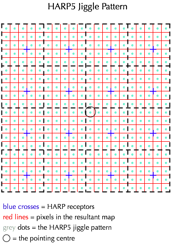
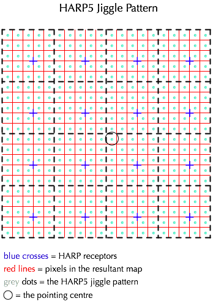

There are three parameters that control the execution of the JCHOP observation: the step_time, the max_time_between_chops, and the max_time_between_nods. The step_time is the dwell time per jiggle position and has a minimum of 0.1s. The max_time_between_chops is the maximum time that can be spend observing jiggle positions before a chop to the sky reference is required, currently set to 9s. The max_time_between_nods, current default 30s, determines how many jiggle-patterns and sky references can be observed before the telescope nods to the alternate chop configuration with the reference on the other side of the target.
The dwell time per jiggle position is calculated to be as long as possible to allow the whole pattern to be completed within the max_time_between_chops, but not to exceed 2s per point. For a 16-pt jiggle this means about 0.56s/point and for a 25-pt jiggle 0.36s/point. Note: while the time between chops of 9s is shorter than the 30s typically used with position-switching, it is much longer than what is required for an accurate determination of continuum emission. For this observers can select continuum mode in the their MSB which changes the max_time_between_chops to 0.1s and forces a sky reference for every jiggle position: the observing mode changes to chop-jiggle (chop-before-jiggle) instead of a jiggle-chop (jiggle-before-chop). However, the frequent chops significantly increase the overheads: limited testing so far suggests that the typical penalty for using continuum mode is an increase of the observing time by a factor of 1.7CHECK!.
Step_time, max_time_between_chops, and max_time_between_nods have been set to defaults that can not be changed by observers directly. Since their optimal settings may depend on e.g. the weather, opacity, and seeing, they are however under the control of the operators, although this is not yet being actively used at present. PIs of science programs that would significantly benefit from settings different from the defaults should contact their assigned support scientist.
An important concept for JCHOP observations is one generally referred to as shared offs (meaning shared sky references). This concept originates from traditional scan-map observations where the telescope scans across an extended source before going to a sky reference. By necessity all positions observed along the scan will share the same sky reference (off). Since 50% of the noise observed in a spectrum (i.e. on-off) results from the off this would lead to severe 'striping' of successive rows unless the integration time in the off position is sufficiently increased to drop its noise significantly below the noise of the on measurements. Calculations show that the integration time in the off needs to be multiplied with sqrt(np), where np is the number of on positions in the row. Of course, there is nothing special about scan-maps: the same applies for any observations where a number of points share the sky reference, as is the case for HARP jiggle-maps where the full 4x4 or 5x5 jiggle pattern is observed before going to the off.
Observations benefit from shared offs in two ways and the more so the more points between the offs (the larger the scan-map). To illustrate, consider 1s observations of 16 positions (which would be a very small scan map). Separate offs would require 32s on the sky equally split between ons and offs. Using shared offs the observation needs only 16+4=20s. But also for each point individually the noise is reduced because of the longer observation of the off. Expressed in a time required to reach a particular rms the combined effect makes shared off observations 4 times faster than separate observations in the limit of many points. More precisely, the factor is ~4/(1+2/sqrt(np)) or ~2.7 for the relatively small HARP jiggle patterns and ignoring fixed overheads (which reduce the factor to closer to ~2). Nevertheless, one night instead of two nights is a huge gain, which is why shared offs are the default for JCHOP observations.
Of course, the above gain comes at a price: all 16 or 25 jiggle-positions from every receptor are correlated because they have the same sky reference (off). As long as the pixels are kept separate this is not an issue because noise remains dominated by the on measurement and the points can be regarded to be only weakly correlated. However, any operation in which pixels are combined will 'suffer' from this correlation in the sense that it will combine pixels that are not fully independent and the noise will hence not drop with the customary sqrt(np) factor. Note that this both applies to operations that use a spatial convolution (smoothing) as well as total flux measurements that sum or average over pixels such as aperture photometry. In the extreme, when averaging data over the whole footprint of a harp4 observation, the noise will be 1/4th (16 independent receptors) instead of 1/16th (196 pixels) of the noise per pixel. Finally: note that JCHOP continuum mode observations always will have separate offs because there will be only a single jiggle position per sky reference.
In conclusion: if imaging or velocity/frequency data are the primary aim of the observations, shared offs are hugely beneficial and recommended; if accurate flux measurements over extended regions are the primary aim or the final maps will be spatially smoothed significantly, separate offs are recommended instead.
The figure below illustrates the duration of observations based on the UT timestamps in the headers. The duration scales linearly with the requested integration time for single-point beam-switched observations (black dots and line). JCHOP maps with separate offs (red dots) follow the same relation which is not surprising since the motion of the secondary is not a dominating factor. JCHOP maps with shared offs also scale linearly with the requested integration time (blue dots and blue line), but require significantly less time than their separate counterpart and, as expected, this effect scales non-linearly with the number of points in the jiggle (cyan points -- 3x3, 4x4, 5x5 pattern, respectively -- and blue line). The durations in the plot include an additional ~60secs before the start UT is written or closing the files after the end UT timestamp. The approximate relations thus become (np: number of points in jiggle; t_on: requested 'on'-only integration time per jiggle-point):
| Jiggle-Chop | Duration (secs) |
|---|---|
| Separate off or 1x1 BMSW | 2.3 * np * t_on + 100 |
| Shared off | 1.27 * [np +sqrt(np)]* t_on + 100 |
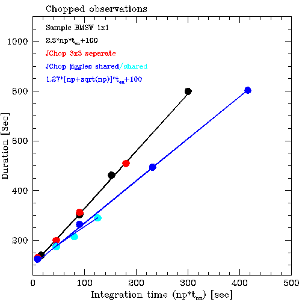
The figure below shows the noise in Jiggle-Chop observations. The top panel compares the observed noise to the expected noise, for chopped observations ranging from single-position to 5x5 jiggles, both using shared and separate offs. Overall the agreement is excellent, but the data indicate an excess noise of about 4% (the black line).
The expected noise can thus be calculated using:
rms = 1.04 * Tsys*1.23/sqrt(df*t_on) * sqrt(1+1/sqrt(np))
1.04: 4% excess noise, presently unexplained
1.23: Correlator digitization factor
df: channel-spacing in Hz
t_on: 'on'-only integration time in sec
np: 1 for separate offs else the number of point
sharing an off. For patterns not exceeding 9x9
this is the number of points in the jiggle pattern.
The bottom panel shows the normalized noise: rms*sqrt(int. time) as a function of the duration of the observations with the noise calculated using the equation above indicated by the black crosses. As expected the normalized noise is independent of the duration and type of the observations, indicating no unexplained sysystematic effects, with one significant exception: all observations with shared offs have about 20% less noise than their separate counterparts. Together with the previous figure above, this panel illustrates the point made when discussing separate offs: not only do observations with shared offs take less time for the same amount of integration time, the resulting noise is lower as well.
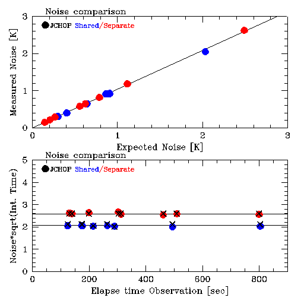
(Since Jiggle-position switch observations share many characteristics with the Jiggle-chops, please make sure to have read the previous section).
This mode is recommended for mapping ≤ 2 arcmin fields where an emission free position is relatively far away from the target. Jiggle-PSSW (JPSSW) observations utilize the secondary to observe a regular grid-pattern of points but, contrary to JCHOP, use a position-switch of the whole telescope to observe sky positions free of emission.
The advantage of JPSSW over JCHOP is that sky reference positions are not restricted to a distance within 180" from the target and can be as far as degrees away. The main disadvantages are the less accurate sky subtraction due to the larger switch and the longer time between sky references. Another disadvantage is the additional overhead resulting from moving the whole telescope to the reference position. The position can be specified as either a relative position or a fixed position. The switch will be to this single position only rather than two positions on diametrically opposite sides of the target, as is the case for JCHOP. (However, note that the reference position can be defined in a coordinate system other than RA, Dec resulting in it rotating from observation to observation in that frame). In order to minimize the number of moves, the telescope executes an OFF-ONs-ONs-OFF etc. pattern, with the switches pairs-wise associated.
There are two parameters that control the execution of the JPSSW observation: the step_time, the max_time_between_refs. As for JCHOP, the step_time is the dwell time per jiggle position and has a minimum of 0.1s. The max_time_between_refs is the maximum time that can be spend observing jiggle positions before a position switch to the sky reference is require; its current default is 30s. Note that in order to minimize the overhead of the position switch, the rate of going to the sky position is less than for JCHOP which can result in worse baselines.
The dwell time per jiggle position is calculated such that it is as long as possible to allow the pattern to be completed within the max_time_between_refs, but not to exceed 2s per point. As for JCHOP there is a continuum mode which changes the max_time_between_refs to 5s at the cost of more overhead. Note that position-switch observations are not well suited for measuring the continuum level, both because of their typically larger switch, as well as the relatively long time between sky references even in continuum mode.
The figure below illustrates the duration of observations based on the UT timestamps in the headers. The duration scales linearly with the requested integration time for single-point position-switched observations (black squares and line). JPSSW maps with separate offs (red circles) follow the same relation which is not surprising since the motion of the secondary is not a dominating factor. JPSSW maps with shared offs also scale linearly with the requested integration time (blue circles and blue line), but require significantly less time than their separate counterparts. Contrary to JCHOP observations, and for reasons not obvious, the same linear relation fits patterns of different size (cyan circles -- 4x4, 5x5 pattern, respectively -- and blue line). The durations in the plot include an additional ~60secs before the start UT is written or closing the files after the end UT timestamp. The approximate relations thus become (np: number of points in jiggle; t_on: requested 'on'-only integration time per jiggle-point):
| Jiggle-PSSW | Duration (secs) |
|---|---|
| Separate off or 1x1 PSSW | 2.45 * np * t_on + 80 |
| Shared off | 1.75 * np * t_on + 80 |
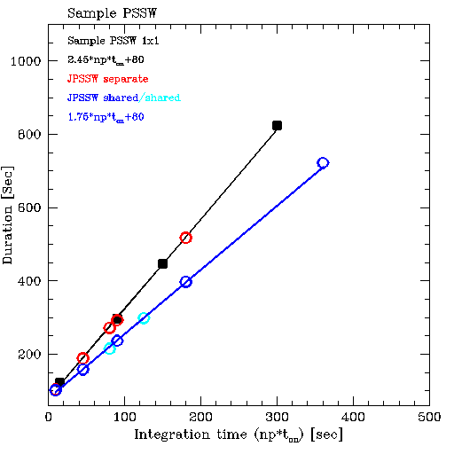
The figure below shows the noise in Jiggle-PSSW observations. The top panel compares the observed noise to the expected noise, for PSSW observations ranging from single-position to 5x5 jiggles, both using shared andseparate offs. As for JCHOP the data indicate an excess noise of about 4% (the black line). The bottom panel shows the normalized noise: rms*sqrt(int. time) as a function of the duration of the observations with the noise calculated using the equation above indicated by the black crosses.
See Jiggle-Chop for a more detailed discussion
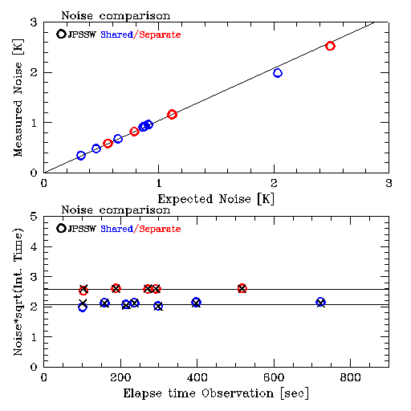
This mode of observing is recommended for sparse mapping or irregular patterns. Grid-PSSW (GPSSW) observations don't use motions of the secondary mirror, but instead move the telescope between the target grid-positions as well as sky positions free of emission. Likewise, it is possible to do Grid-BMSW observations, but these will not be further discussed here.
The advantage of Grid-PSSW observations is that the target positions are under full control of the observer and that under-sampled maps or non-regular patterns can be observed. Like JPSSW, the sky reference can be far away from the target. A disadvantage is that moving the telescope to execute the grid is relatively slow resulting in a larger overhead than with jiggle observations. In order to minimize the number of moves, the telescope executes an OFF-ONs-ONs-OFF etc. pattern, with the switches pairs-wise associated. The off-switch will be to a single, specified, reference position. (However, note that the reference position can be defined in a coordinate system other than RA, Dec resulting in it rotating from observation to observation in that frame).
[Note: it is possible to do a grid of jiggle-maps by putting a "Jiggle-Eye" inside an "Offset" iterator. However, in this case the jiggles will be executed as fully independent observations at each grid point, resulting in independent cubes.]
Grid patterns can be set up using the Offset iterator in the JCMTOT, either as a regular pattern or as a list of individual offsets.
There are two parameters that control the execution of the GPSSW observation: the step_time_grid_pssw, the max_time_between_refs. As for the other modes the step_time is the minimum dwell time per point, but for GPSSW it's default value is 1.0s rather than the 0.1s for jiggles. The max_time_between_refs, default 30s, is the maximum time that can be spend observing grid positions before a position switch to the sky reference is require. The rate of going to the sky position is less than for the equivalent JCHOP observation, which can result in worse baselines.
Similar to JPSSW, there is continuum mode for GPSSW, which changes the max_time_between_refs to 5s at the cost of more overhead. Note that position-switch observations are not well suited for measuring the continuum level both, because of their typically larger switch, as well as the relatively long time between sky references even in continuum mode.
Shared and separate modes are available as for JCHOP (see description there), but without being able to do a fast jiggle to cover the pattern the distinction is rather irrelevant in practice. With a minimum of 1s/point and a maximum of 30s between refs, multiple grid-points can only be observed for short integration times. This means that relatively many telescope moves are required for little integration time implying large overheads. Being more efficient, shared offs mitigate the effects of the increased overheads. On the other hand, short observations with separate offs are particularly inefficient: because of restrictions imposed by the data handling within the correlator these observations have to switch to the reference after each grid-point, even if the integration time per point is only as short as 1s.
Finally, as soon as the integration time per grid-point becomes such that only a single grid-point can be observed before having to go the sky reference (i.e. 15sec by default) there will be only one point per reference and the distinction between separate and shared offs disappears: the observations will use separate offs.
In conclusion: for any observations with integration times ≥15s per grid-point the choice of shared or separate offs is irrelevant. For shorter integration times a choice for separate offs comes with a heavy penalty in the form of excessive overheads.
The above conclusion is illustrated in the plot below, which shows the duration of observations based on the UT timestamps in the headers. The duration scales linearly with the requested integration time for single-point position-switched observations (black squares and line). GPSSW maps with shared offs also scale linearly with the requested integration time (blue squares and blue line), but require a bit more time than their 1x1 counterpart due to the telescope motions within the grid. Although the overheads increase for larger maps with more points (cyan points -- 4x4, 5x5 pattern, respectively --) the increase is not very large. On the other hand, short maps with separate offs (red squares and line) incur an excessive overhead due to the many switches to the sky reference up to the point the integration time per grid-point exceeds 15s when the distinction between separate and shared offs vanishes. The durations in the plot include an additional ~60secs before the start UT is written or closing the files after the end UT timestamp. The approximate relations thus become (np: number of points in jiggle; t_on: requested 'on'-only integration time per jiggle-point):
| Grid-PSSW | Duration (secs) |
|---|---|
| 1x1 PSSW | 2.45 * t_on + 80 |
| Shared off and separate ≥ 15s | 2.65 * np * t_on + 80 |
| Separate off < 15s | 2.0 * np * t_on + 190 |
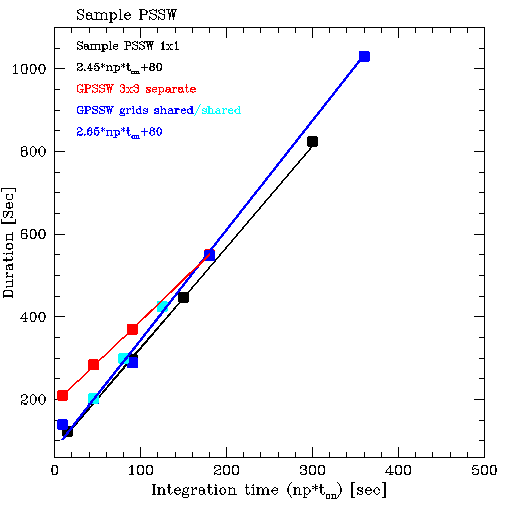
The figure below shows the noise in Jiggle-PSSW observations. The top panel compares the observed noise to the expected noise, for PSSW observations ranging from single-position to 5x5 grids, both using shared andseparate offs. As for JCHOP the data indicate an excess noise of about 4% (the black line). The bottom panel shows the normalized noise: rms*sqrt(int. time) as a function of the duration of the observations with the expected noise indicated by the black crosses. The equation used is the same as given in the discussion of JCHOP observations, but 'np' is a bit less straightforward:
rms = 1.04 * Tsys*1.23/sqrt(df*t_on) * sqrt(1+1/sqrt(np))
np: number of points with shared offs or 1 if none:
max(1,int(30/t_on)) i.e. the number of t_ons that fit
in 30sec, but no less than 1. (30secs = time_between_refs.)
Observations with shared offs but on integration times in excess of 15s are excuted the same as observations with separate offs.
See Jiggle-Chop for more details.
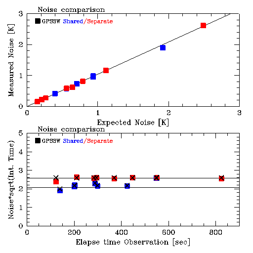
Frequency switching mode is suitable for sources with narrow lines (~< 10 MHz) and low line density. In such sources it has superior noise performance for single point observations or small maps. Frequency switching also has advantages in large maps when there is no nearby line free region to use as a reference position.
Baselines are common with frequency switching. There are several reasons for this. The frequency change and the associated variation in LO power changes the mixer impedance, coupling and conversion efficiency creating baselines. For small frequency switches the baselines are well behaved and can be removed by baselining. Another cause is standing waves in the optics in front of the mixer. These will move in the band pass when the frequency shifts and are not cancelled. The standing wave between the cabin and secondary has a frequency of ~ 16.2 MHz at the JCMT. Frequency switching by 16.2 or 32.4 MHz reduces such standing waves. Thus frequency switching is most suitable for observations of narrow lines not affected by baselines. It should definitely not be used for continuum observations. The JCMT uses an elaborate calibration scheme to reduce the baselines which doubles the time integrating on calibration loads.
The baselines and the performance of the LO system limits the amount of the frequency shift. Currently switches up to 32.4 MHz have been tested with good results for both RxA and HARP. Since the line is present in both the signal and reference observation it will occur twice in the raw spectrum. After processing to average the two independent lines in the spectra there will be three features. This is not a problem for an isolated line but care has to be taken if there is more than one line in the band pass. Users should also be aware that lines from the earth's atmosphere not are canceled. Terrestrial Ozone lines are routinely observed using frequency switching. Thus CO and Ozone can generate additional features in the spectra. The user needs to select center frequency (or velocity) and switch amount to avoid line blends.
Due to the fact the same line is observed both in the source and reference spectra the noise is improved by sqrt(2) after processing. However, observing modes that uses one reference observations (offs) for several on sources positions as jiggles and grids (with shared offs) and scan pssw becomes more efficient when the number of on source positions are large. Neglecting overheads these methods are more efficient than frequency switching if more than 5 on source points share the same off. The actual trade of point depends on overheads. Thus, in cases where there not is a good reference position in the vicinity of the source, frequency switch can maintain the advantages for larger maps. However, it is still recommended that the calibration is performed on a line free reference position. This requires that a reference position is defined in the OT target component. In cases with weak lines (line << Tsys) and no continuum it is possible to calibrate on source.
The figure below shows the duration all observing modes discussed above and separates into three groups:
Most efficient: Jiggles with shared offs, either beam-switched (JCHOP) or position-switched (JPSSW). Compared to GPSSW or separate jiggles, these observations take 30% less time.
Single-position, GPSSW, and JCHOP/JPSSW with separate offs: these observations don't get the benefit from the shared offs or accrue additional overheads due to e.g. a position switch to the sky reference.
GPSSW observations with separate offs and integrations time < 15s per grid point: these have excessive overheads due to increased number of position switches to the sky reference.
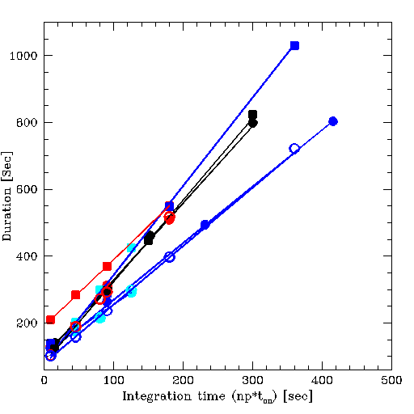
In addition to taking less time, JCHOP and JPSSW with shared offs will have a systematically lower noise as well. This is shown in the next two, side-by-side figures. The figure on the right zooms on the lower-left region of the figure top-left. Using the equations above we find that compared to t_on_nonsh = 30s, shared off observations with 16 points will need t_on_sh = 18.75s to reach the same rms. Using the equations for duration of JCHOP observations at the top which include the fixed overheads, one then finds that the shared offs JCHOPS will take about half the time as the separate offs JCHOPS: 15min instead of 33min as is illustrated in the final figure.
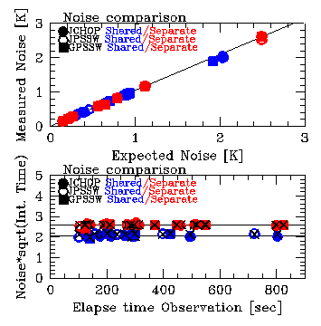 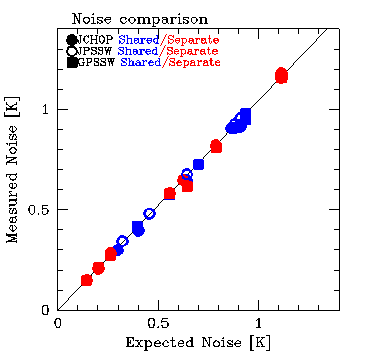
The figure below shows the benefits in terms of the duration of the HARP4 jiggle observation, including realistic overheads, needed to reach a certain rms (assumed Tsys = 250 K and frequency channels of 1 MHz). Note that shared/separate offs are only relevant within a single observation, which typically takes 10-20 minutes: the noise in coadds of successive observations will scale as usual with the sqrt(nr of observations).